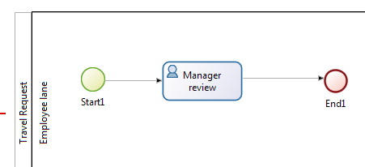
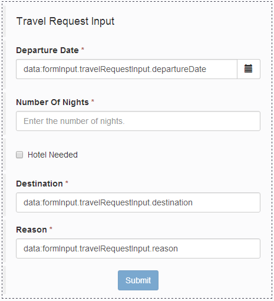
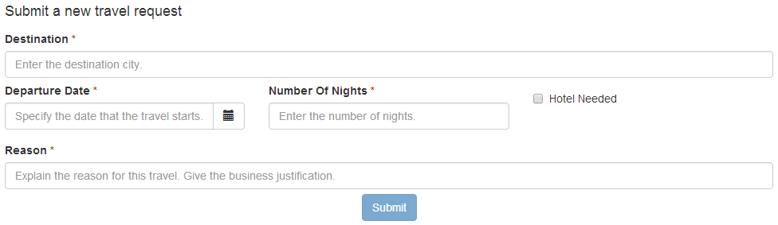

Getting started tutorial
This tutorial explains how to create an application that includes a process. The application is created using the Bonita Community Edition, and uses features that are available in all editions. The example application is a business travel tool.
Important: these instructions are also available as a video. The complete solution is available on GitHub.
Here is the use-case: An employee opens the Travel Tool application to view their pending and approved travel requests. They create a new travel request. Then the request is sent to the employee’s manager. The manager reviews the request and approves or refuses it.
In a real travel management application, there would be several process steps after approval: estimating costs, possibly getting a second level of approval if the cost passes a certain threshold, submitting an expenses claim after the travel, reviewing the expenses claim, escalating anything out of policy, and authorizing payment. However, for this tutorial you will consider only the first part of the process, where a travel request is submitted and then reviewed.
This tutorial assumes that you are a developer using Bonita for the first time. It gives instructions for using Bonita Studio, the UI Designer, and Bonita Portal. It assumes you are familiar with JavaScript, JSON and REST APIs.
Use Bonita Studio to define your process, including using the UI Designer to create pages and forms. Then use Bonita Portal to build the application.
This is the recommended sequence for creating an application, but generally application pages, data model and processes are defined in parallel and evolve as you go deeper in the application details:
Design application pages
The first step in creating an application is to design the application pages in the UI Designer using dummy data, creating a prototype application as seen by users. This enables you to review the application with the stakeholders and get validation of the application design before proceeding to more complex tasks.
The Bonita Studio UI Designer is an environment for creating application pages and forms. To start the UI Designer, click the UI Designer icon in the Bonita Studio coolbar (at the top of the screen). The UI Designer opens in a browser.
The travel tool has a home page that displays a list of pending and approved travel requests to the current user. It contains a button for starting a new travel request.
There are also some forms that are associated with the travel management process:
- Create a travel request
- Review a travel request and approve or refuse it
The easiest way to create these forms is from the process definition, so that is what you will do later in the tutorial.
The following sections explain how to create the application page and then populate it with dummy data. At any stage, you can click Preview and see a preview of the layout of the page as it will appear to users. Remember to click Save to save your work frequently.
Create travel tool home page
In Bonita Studio, start the UI Designer by clicking the icon in the coolbar. This opens the UI Designer in your browser, at the home page.
- In the UI Designer home page, click on the Create button. This brings a pop-up.
- In the pop-up, set the type to Application page and name to TravelTool. The name must not contain spaces or special characters. This name is used in Bonita to identify the page. It is not displayed to the application user.
- Click on Create. This opens the new page in the Page editor.
Create the page structure by dragging widgets from the palette on the left and dropping them on the whiteboard (the central panel). Specify the characteristics of a widget by selecting it and updating the properties in the panel on the right. Add the following widgets:
- A TEXT widget, with the Text property set to username.
- A TITLE widget, with the Text property set to Travel tool.
- A TEXT widget, with text introducing the application:
This page lists your pending and approved travel requests. - A CONTAINER for the user pending requests, with the following widgets:
- A TITLE widget with a lower title level than the page title (for example, “Level 3”), with the text
My pending requests. - A TABLE widget for listing pending travel requests, with the following properties:
- Headers set to
Departure date, Number of nights, Hotel needed, Destination, Reason - Columns key set to
departureDate, numberOfNights, hotelNeeded, destination, reason
- Headers set to
- A LINK widget with text
Create new travel requestand Style property set to primary.
- A TITLE widget with a lower title level than the page title (for example, “Level 3”), with the text
- A CONTAINER for the user approved requests, with the following widgets:
- A TITLE widget with a lower title level than the page title (for example, “Level 3”), with the text
My approved requests. - A TABLE widget for listing approved travel requests, with the following properties:
- Headers set to
Departure date, Number of nights, Hotel needed, Destination, Reason. - Columns key set to
departureDate, numberOfNights, hotelNeeded, destination, reason.
- Headers set to
- A TITLE widget with a lower title level than the page title (for example, “Level 3”), with the text
When you have added the widgets, click Preview to see how the page displays.
Change the arrangement of the widgets in the whiteboard using drag and drop and using the Width property, until you are happy with the result.
Remember to click the topmost Save button, or type Ctrl+S to save your work.
Add dummy data
Now use some dummy data to see how the tables will look when there is data.
First create a variable containing the data, and then bind the variable to the widget Value property.
In the application, the real data will be business data retrieved by a REST API call.
The dummy data for the travel requests is in JSON. You need two JSON variables, myPendingRequests and myApprovedRequests.
To create myPendingRequests:
- In the Variables panel (at the bottom of the page), click Create a new variable.
- Enter the variable name, myPendingRequests.
- Select the JSON type.
- Enter this value:
[
{
"userId": 3,
"destination": "Grenoble",
"departureDate": "2016-02-09",
"numberOfNights": 1,
"hotelNeeded": true,
"reason": "Bonita 7.2 launch",
"status": "pending",
"refusalReason": ""
},
{
"userId": 3,
"departureDate": "2016-10-09",
"numberOfNights": 3,
"hotelNeeded": false,
"destination": "Paris",
"reason": "Open source conference",
"status": "pending",
"refusalReason": ""
},
{
"userId": 3,
"departureDate": "2016-07-07",
"numberOfNights": 4,
"hotelNeeded": false,
"destination": "San Francisco",
"reason": "BPAD training",
"status": "pending",
"refusalReason": ""
}
]
- Click Save.
- Select the table widget for the pending requests.
- In the Content property, click the link icon at the right (“fx”), then click in the box and choose
myPendingRequestsfrom the list of variables (start typing the variable name to get auto-completion). - Click Preview to see the page with data for pending requests.
Now follow the same steps to createmyApprovedRequestswith the following content:[ { "userId": 3, "destination": "Tokyo", "departureDate": "2016-10-10", "numberOfNights": 5, "hotelNeeded": true, "reason": "BPM for HR conference", "status": "approved", "refusalReason": "" }, { "userId": 3, "departureDate": "2015-12-11", "numberOfNights": 3, "hotelNeeded": false, "destination": "San Francisco", "reason": "Meetings with team", "status": "approved", "refusalReason": "" } ]
When you have defined this variable, select the table widget for the approved requests and set the value of the Content property to myApprovedRequests (remember to click on the “fx” icon).
Review and improve the page
You now have a prototype of the TravelTool page with dummy data. View the prototype, and adjust the arrangement of the widgets until you are happy with the appearance of the page.
You can drag and drop widgets to reorder them, and you can change properties including Width and Alignment. For example, to improve this page, you could make the following changes:
- Select the username widget, and change the Alignment to
right. - Select the “Travel Tool” title and drag it beside the username. The size of the username widget will automatically adjust, so that both widgets are in the same row.
- Select the “Create new travel request” link widget and change the Alignment to
center.
Create the data model
There are two stages to defining variables: first you define the business data model, and then you specify how the process handles objects of the model.
The model is defined as a set of Java classes, and the process uses instances of these classes. If you are not familiar with the terminology, all you need to remember is that the model is the global definition, with a collection of structured variables.
For your process, you select the subset that is relevant.
First, we will create the business data model, which will then be available for all processes. We will use a model with one object:
- TravelRequest contains the details of the travel that is being requested and its approval status.
To define the business data model:
- Go to the Development menu, choose Business Data Model, and then choose Manage…. This opens the dialog to manage the business data model.
- Beside the list of business object types, click Add. A temporary type name, such as BusinessObject1 is added to the list.
- Click on the temporary name, and change it to TravelRequest.
-
Select the TravelRequest business object type, and add its attributes. This table shows the attributes and their types:
Variable Data type Mandatory userId Long yes departureDate Date Only yes numberOfNights Integer yes hotelNeeded Boolean yes destination String yes reason String yes status String yes refusalReason String no
To add each attribute:
- In the Attributes tab, click Add. A temporary attribute name (“attribute1”) is added to the Name column.
- Change the temporary name to the attribute name.
- Select the type from the drop-down list. To display the list, click at the right end of the Type column.
- There are no Multiple attributes in this object, so you can ignore this column.
- In the Mandatory column, check the box for the attributes that are mandatory.
- Add a custom query that you will use to search for data using both the userId and the status:
- In the Queries tab, select Custom.
- Click Add. A temporary query name (“query1”) is added to the Name column.
- Change the temporary name to
findByUserIdAndStatus. - Click in the query column, and then click the edit icon at the right. This opens a popup with a proposed custom query that uses all the attributes.
- In the JPQL Query field, remove these lines:
AND t.departureDate = :departureDate AND t.numberOfNights = :numberOfNights AND t.hotelNeeded = :hotelNeeded AND t.destination = :destination AND t.reason = :reason AND t.refusalReason = :refusalReason- In the Parameters list, delete all the attributes except userId and status.
- Click OK to save the query.
- Click Finish to save the business data model.
Create the process definition
Create the diagram
The first stage is to create the new diagram, which you do using Bonita Studio. While you are working on a diagram, save your work from time to time, by clicking the Save icon in the coolbar (at the top of the screen) or typing CTRL+S.
Create the diagram as follows:
- Click New diagram on the Bonita Studio Welcome page. This creates an almost empty diagram for you to start updating:
- The large rectangle with a name at the left is the pool.
- Inside the pool there is a lane, which is also a rectangle. You can see the border of the lane at the left side, beside the pool name. The other borders of the lane coincide with the pool border so are not visible.
- The green circle in the lane is a start event.
- The blue box in the lane is a human task.
- The first thing to do is to give the diagram a more descriptive name. Click on the diagram outside the pool, then go to the Details panel. This is the area on the bottom-right of the screen.
- In the General tab, Diagram pane, click Edit… next to the Name field.
- Enter the new diagram name, Simple Travel Request, in the popup and click OK. You can see in the tab at the top of the whiteboard that the diagram name has changed.
- Now give the Pool a more descriptive name. Select the pool by clicking in the space between the pool border and the lane border at the left side of the diagram. Then go to the Details panel, General tab, Pool pane, and click Edit… next to the Name field. Enter the new pool name, Travel Request, in the popup. When you have renamed the diagram and the pool, the diagram looks like this:

- This process starts when an employee fills in a travel request form. You do not need to create a task for this because it is this action that triggers the process to start. This is known as process instantiation. A form for process instantiation is defined at the pool level.
- Define what happens after the user submits a request form: the manager reviews the travel request and approves or refuses it. You can use the example task that was added to the diagram automatically. Click on the task name and change it to Manager review.
- In a future evolution of this process, the next task would be to send the travel request details to the admin team so they can handle the booking. For now, though we are just interested in getting the first part of the process working, so add an end after the review task. You can do this by dragging the end icon (red circle) from the palette to the whiteboard, and then connecting to the Manager review task with a flow element.
When you have finished, your diagram should look like this:

Define business variables
You have already defined the data model, but now you need to specify how the model is applied to this process.
Define a travelRequest business variable, which is an instance of the TravelRequest object type. Follow these steps:
- Select the pool.
- Go to the Details panel, Data tab, Pool variables pane and click Add… beside the Business variables box.
- In the Name field, type travelRequest.
- Add a description to document your development if you want to.
- From the Business Object list, choose TravelRequest.
- Do not configure the default value. The default value uses information that is in the contract, so you will define it later.
- Click Finish to save the definition.
The attributes of travelRequest are the information that is used in the process. There are no other variables to define.
Create contracts
A contract is the specification of what a form must return to the process instance. Define a contract for process instantiation, and for each human task.
The contract does not need to include information that is sent from the process instance to the form. This is included in the context, which is the set of information passed to the form. You cannot configure the context.
The information that you specify in the contract is a subset of the information used in the process.
To specify the process instantiation contract, select the pool and follow these steps:
- Go to the Details panel, Execution tab, Contract pane.
- In the Inputs tab, click Add from data…. This opens a popup for creating the contract using the business data variables that are defined for the process.
- Select travelRequest and click Next.
- Specify the attributes to include. By default, all the attributes are checked, so uncheck those that are not relevant: userId, status and refusalReason.
- Leave the radio button on automatic generation of initialization script.
- Click Finish and safely ignore the warning related to contract generation as we will take care of those in time.
Now that the case instantiation contract is set up, we will add two constraints on its values.
The first one will ensure that the departure date is in the future and the second will validate that the number of nights is greater or equal to zero.
- Still in the Contract pane, switch to the Constraints tab and click Add. This adds a placeholder constraint.
- Click on the placeholder name and change it to departureInFuture.
- Click in the Expression field, then click on the icon that appears at the right of the field. This opens a popup where you can enter the constraint expression.
- Define the constraint with this script:
travelRequestInput.departureDate.isAfter(java.time.LocalDate.now()) - In the Error message column, add this text:
Departure date must be in the future. - Add a second constraint as following:
- Name:
zeroOrMoreNights - Expression:
travelRequestInput.numberOfNights >= 0 - Error message:
Number of nights must be greater or equal to zero.
- Name:
In the Details panel, Execution tab, Contract pane, Inputs tab click the arrow next to travelRequestInput to expand the list of attributes.
For each attribute, add a Description. The description is displayed in the automatically generated form used for process testing, so include information that will help the user complete the form correctly, as follows:
| Attribute | Description |
|---|---|
| departureDate | Specify the date that the travel starts |
| numberOfNights | Enter the number of nights |
| hotelNeeded | Specify if you need a hotel reservation |
| destination | Enter the destination city |
| reason | Explain the reason for this travel. Give the business justification |
The process instantiation contract is now complete.
The contract for the Manager review task only has two inputs, status and refusalReason, so you can create it directly instead of from data.
It also has a constraint: a refusalReason must be specified if the manager refuses the request. To define this contract:
- Select the Manager review task.
- Go to the Details panel, Execution tab, Contract pane.
-
In the Inputs tab, click Add and specify the following attributes:
Name Type Multiple Description status Text No Indicate whether you approve or refuse this request refusalReason Text No If you refuse a request, you must give a reason - Go to the Constraints tab and click Add. This adds a placeholder constraint.
- Click on the placeholder name and change it to reasonRequired.
- Click in the Expression field, then click on the icon that appears at the right of the field. This opens a popup where you can enter the constraint expression.
- Define the constraint with this script:
status == "approved" || (status == "refused" && refusalReason?.trim()) - In the Error message column, add this text:
If you refuse a request, you must give a reason.
Define business object initial values
Now that the contract is defined, you can configure the initial value of travelRequest, as follows:
- Select the pool and go to the Details panel, Data tab, Pool variables pane.
- Double-click travelRequest to edit it.
- Click the pencil icon beside the Default value field. This opens the expression editor.
- An initTravelRequest() script was automatically generated to initialize our data with the contract. We will complete this script by setting up the userId and status attributes.
Insert the following code after the first line:travelRequestVar.userId = BonitaUsers.getProcessInstanceInitiator(apiAccessor, processInstanceId).id travelRequestVar.status = "pending" - Click OK to save the expression.
- Click OK again to save the updated object definition.
Update business object with review data
You need to define operations to update the business object with the values entered for status and refusalReason in the Manager review form.
Select the Manager review task, and go to the Details panel, Execution tab, Operations pane. First define the operation for status, as follows:
- Create a new operation by clicking Add.
- In the first field, click the down-arrow to display a list of variables on which an operation can be performed, and double-click travelRequest.
- Click the Takes value of link. This opens a popup listing the available operations. Choose Use a Java method. The popup displays a list of available methods. Click setStatus(String) - void, and then click OK.
- In the last field, click the down-arrow to display a list of variables, and double-click status.
Repeat these steps to define the operation for refusalReason.
When both of the operations are defined, the Details panel should look like this:

Specify actors
The next stage is to define who carries out the steps in the process. This is done by assigning actors.
An actor is a placeholder for the person who will do a task.
When you configure a process, you make the connection between the actors defined in the process definition and the real-world people who will do process steps.
Bonita Studio comes with a test organization, called ACME, which you can use for testing. In this example, we have two people, the employee who initiates the process, and the employee’s manager.
The managers are also employees, so you can use the same actor for process instantiation and for the review task, but use a filter to specify who does the approval step. This is how it works:
- In the diagram, select the pool and go to the Details panel, General tab, Actors pane. This is where you define all the actors for the process.
By default, there is already an Employee actor, which is defined for testing. You can change the organization and the actors later, but for initial testing, this will work fine.
The default settings mean that any employee in the organization can start a case of the travel request process. You do not need to change anything. - Next, select the Manager review step and define who can do this. This step will be done by the manager of the person who initiated the request.
All the managers are also employees, and the employee actor is defined for the lane, so check the button for Use the actor defined in the lane. - To make sure that the review task is sent to the right manager, use an actor filter:
- Click the actor filter Set… button.
- Open up the list of process actor filters.
- Select Initiator manager. This means that the review task is to be done by the manager of the person who submitted the request that initiated the process. Click Next
- Specify a name for the actor filter definition, requestersManager, and click Finish.
The process is now defined. The next section shows you how to configure and run it to verify that the process definition is correct before you define forms and create the application.
Run process with temporary forms
You can run a process that is in development before you create forms, by using temporary forms that are created automatically.
This section explains how to configure the process and run it from Bonita Studio.
Before you can run the process, you need to configure it. For the first run we will use the default setting.
You can run the process and see the temporary forms, to check that the process definition is correct.
- Click Run in the coolbar. This opens a browser window, logs you in to Bonita Portal as Walter Bates (user used for authentication in the default process configuration), and displays the travel request form.
- Fill out the form. Make sure that you use the right format for each field in the temporary forms (“yyyy-mm-dd” format for dates and either “true” or “false” value for booleans).
- When you have filled out the form, click Start. This submits the form and starts the process instance.
- At the top-right of the Portal window, click the arrow beside Walter’s name and choose Logout.
- Log in as Walter’s manager, Helen Kelly, with username
helen.kellyand passwordbpm. The Tasks view is displayed, where there is a task called Manager review. - Select the Manager review task. The temporary form for the manager review is displayed in the right hand panel.
It contains fields for the items defined in the contract for this step, but not the information that Walter entered in the request.
When you create your own forms, you will add this information, so that the manager can see the details of the request before approving or refusing it.
For now, you can see the form, so you have verified that the process definition is correct.
Create forms
The easiest way to create a process form is to generate it automatically from the contract. This automatically creates a mapping between the process and the form and defines form data. You can then update the form manually to add or remove field, and to change the layout.
While using the UI Designer, click Save frequently to save your work.
To create the process instantiation form:
- In Bonita Studio, select the pool and go to the Details panel, Execution tab, Contract pane.
- At the top-right of the Details panel, click the UI Designer icon. This opens the UI Designer in a browser window, with the automatically generated form.
- Change the form name. All forms that are generated automatically are called newForm, so you must rename them to avoid confusion. To do this, double-click on the name in the top bar, and then specify a new form name, submitTravelRequest.
The form is now created. A form is a UI Designer page that is mapped to a process and a contract. A page is a collection of widgets, and each field is defined by a widget.
Widgets are arranged in rows and each row is divided into 12 columns. Each widget has a width that spans across one or more column. In addition to their width, widgets have a set of editable properties that can be set on the right side of the window.
To change the appearance and behavior of a page, you update the widgets. At any time, you can click Preview to see how the page will look to a user.
To have more space to update the page, you can hide the Variables and Assets tabs, by clicking on the down-arrow.
Before improving the look of the form, we will enforce some validation rules on the different fields:
- Select the Number Of Nights widget and set its Min value property to 0.
- Preview the form and try to enter some values to make sure that the validation works. Submit button should be disabled until all widgets contain valid values.
The form should now look like this in the page editor:

Now that the form is functional, we are going to improve its appearance to make it more user-friendly:
- Select the title widget, and change the Text property to
Submit a new travel request. - Make the Departure date widget narrower. To do this, select it and change the value of the Width property to 4 columns.
- Move the Destination widget up to the top of the form (below the title).
- Move the Number of nights and Hotel needed widgets to the same row as the Departure date, and reduce the widths.
Note: when you add a widget to a row, it automatically takes all the remaining columns, so set the width after you move the widgets. - Clear the initial value for Number of nights to show the placeholder at run time:
- In the Variables panel (at the bottom of the page), locate the row containing the formInput variable.
- Click on the pencil icon located at the right side of this row.
- Change the value of the numberOfNights attribute from 0 to null.
- Click on Save.
When you have finished, the preview of the form looks like this:

Now define the form for the Manager review task. Start by automatically generating the form from the context, then add widgets to display the request details for the manager to review. Follow these steps:
- In Bonita Studio, select the Manager review task and go to the Details panel, Execution tab, Contract pane.
- At the top-right of the Details panel, click the UI Designer icon. This generates a form and opens it in the UI Designer.
- Change the form name to reviewTravelRequest.
- Add a variable to get the information that the user enters in the request form. To do this:
- In the Variables tab, click Create a new variable.
- Specify the name, request.
- Set the Type to External API.
- Set the value to
../. - Click Save.
-
Add a variable to hold the different request status values:
Name Type Value statusValues JSON [{"label": "Approve request", "value": "approved"},{"label": "Refuse request", "value": "refused"}] - Edit the formInput variable and set the value for the status attribute to “approved”.
- All of the other widgets you will add will be placed inside the form container (identified with a dashed border).
- Add a title widget and set its text property to
Review travel request. Set the Level property to Level 4, so it is the same size as the title of the form for creating a request. -
Add read-only widgets to display the details of the travel request, using the following information:
Label Widget type Value binding Read-only Destination Input request.destination yes Departure date Date picker request.departureDate yes Number of nights Input request.numberOfNights yes Hotel needed Checkbox request.hotelNeeded yes Reason for travel Text area request.reason yes - Remove the “Refusal reason” widget that was added automatically, we will replace it by something more user-friendly in the next step.
-
Add a Text area widget with the following properties:
Property Value Hidden formInput.status === 'approved'(click on “fx”/”bind” icon first)Label Refusal reason Value formInput.refusalReasonRequired yes The dynamic Hidden property will hide the widget when the request status is set to ‘approved’. Otherwise, the field will be marked as required and the form validation will prevent the user from refusing a request without a reason.
- Remove the Status widget that was added automatically.
-
Add a Radio buttons widget with the following properties:
Property Value Label Review decision Available values (click on the “fx” binding icon next to the input field first) statusValues Displayed keys label Returned keys value Selected Value formInput.status - Preview the form to test the validation and rearrange the widgets until it looks like this in the editor:

Run process
You can now run the process using the forms that you created. Make sure that you have saved everything in the UI Designer. Then click Run in the Studio coolbar.
Fill out the request form as Walter, then log in as Helen and do the review task.
When the review form is displayed, it contains the information that Walter entered in the request form. You can approve or refuse the request.
Once process is finished you can see the request information as stored in the business data database in Bonita Studio:
- From the menu bar, choose Development menu, choose Business Data Model, and then choose Brows data (h2 console)…. This opens the h2 (business data database) web interface in a web browser.
- In the left tree menu click on TRAVELREQUEST. This will generate an SQL select query.
- Click on Run (Ctrl+Enter) button. You should view all the requests created by running the Travel Request process.
You process is now complete, so you can include it in an application.
Build the application
This section explains how to build the application from the pages and process that you have already created. There are the following steps:
- In the UI Designer, update the application page to use business data instead of the dummy JSON data and to specify the connection between the page and the process.
- In Bonita Portal, create the application.
Update the TravelTool application page
In the UI Designer edit the TravelTool page and create the following variables:
| Name | Type | Value |
|---|---|---|
| session | External API | ../API/system/session/unusedId |
| processDef | External API | ../API/bpm/process?p=0&c=1&f=name=Travel%20Request |
Update (edit) the following variables:
| Name | Type | Value |
|---|---|---|
| myPendingRequests | External API | ../API/bdm/businessData/com.company.model.TravelRequest?q=findByUserIdAndStatus&p=0&c=10&f=userId=&f=status=pending |
| myApprovedRequests | External API | ../API/bdm/businessData/com.company.model.TravelRequest?q=findByUserIdAndStatus&p=0&c=10&f=userId=&f=status=approved |
Now update the widgets to use the new variables:
- Select the username widget at the top of the page, and update the Text to this value: ``.
- For both pending and approved requests, set the Column keys to
departureDate | date, numberOfNights, hotelNeeded, destination, reason, to set the date format.
Link button to process
When the user clicks the button on the Travel Tool page for creating a travel request, the application displays the form for creating a request.
This is the instantiation form for the Travel Request process.
To configure this, select the button and set the target URL property by first clicking on the change to bind to an expression button (‘fx’ to the right of the field) and then updating the expression to "/bonita/portal/resource/process/Travel%20Request/1.0/content/?id="+processDef[0].id.
After the user submits the form, the Tasks view of Bonita Portal is displayed.
Build application
To build the Travel Tool application, you need to export the page from the UI Designer, deploy the process, and then create the application in Bonita Portal.
To export the page, click the Export icon in the Page editor (next to the Save button) or on the home page. The page is exported as a zip file in your default browser download location.
To deploy the process, you can simply run it from Bonita Studio. If you have no changed the process since you last ran it, it is already deployed.
To create your application in Bonita Portal:
- Log in to Bonita Portal by clicking the Portal icon in the coolbar and click the arrow beside “User” and select “Administrator” to switch to Administrator profile .
- From the menu bar, choose Resources, and then click Add and import the TravelTool page that you exported from the UI Designer.
- Go to Applications and click New.
- Name your application Travel App, set its URL to travel, and click Create. The application is created.
- In the list of applications, click the edit (triple dot) icon to configure your new application.
- In the Pages section, click Add.
- Select the Travel tool page you imported. Set its URL to requests. Click Add.
- Make this page the application home page by clicking on the home icon that appears when hovering on it.
- Delete the default home page.
- Check that the application is correctly defined, by clicking the URL. The travel requests summary page is displayed, with a link to the form to create a new request. When you click the link, the form for submitting a new travel requests is displayed.
Congratulations, you have just created your first Living Application!